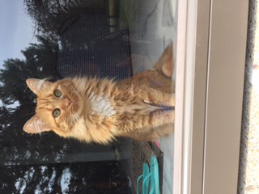

Marie is a little ginger tabby. She was named after the white kitten in the Disney Aristocats movie and also Marie Curie, the scientist. She was adopted from a shelter and is turning three in November.
Marie’s favorite things to do are play, sleep, and eat. She likes to settle herself into boxes and bags. She also enjoys chasing little colored mice that rattle around the house. Additionally, she likes biting and attacking string. Lastly, above all things, Marie loves being pet and rolling around!